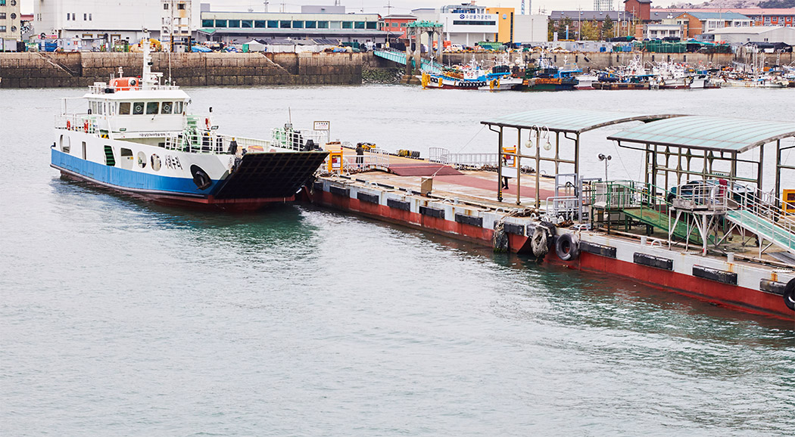
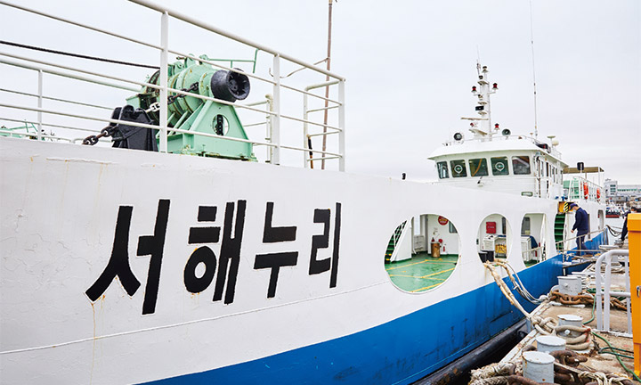
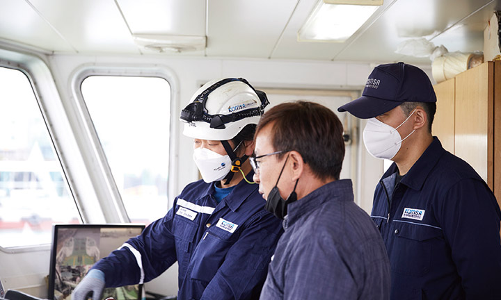
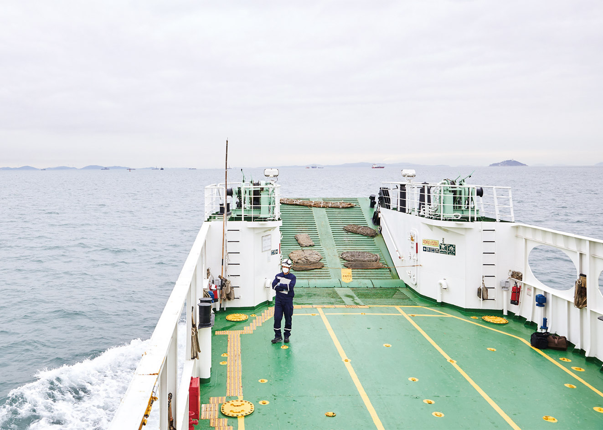
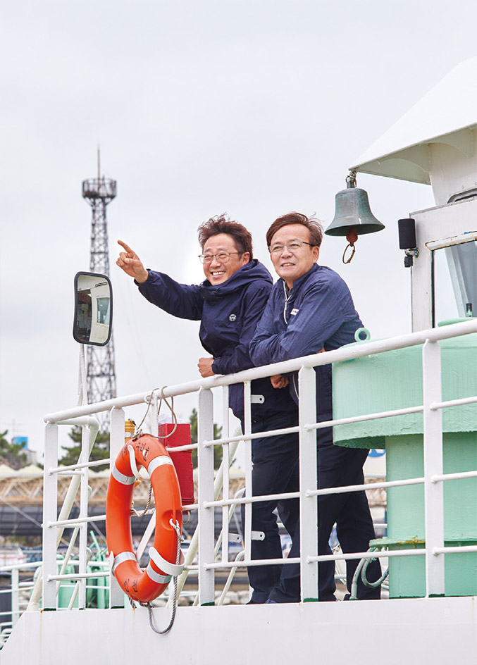

바다는 우리 삶의 터전이자 자원의 보고이며, 국가 경쟁력을 뒷받침하는 원천이다. 이러한 바다를 터전으로 살아가는 주민들에게 꼭 필요한 것이 섬과 육지를 잇는 선박일 것이다. 대부해운은 지난 25년 간 서해 곳곳을 오가며 주민들의 소중하고 안전한 교통수단이 되어주고 있다. 안전한 운항을 위해 인천지사 및 운항관리센터와의 긴밀하고 유대감 깊은 협력을 이어나가면서 말이다.
Text. 한율 Photo. 고인순

1997년 대부고속훼리 1호를 건조해 해운업을 시작한 대부해운은 활기찬 서해안 시대를 열겠다는 목표 아래 25년 간 꾸준하게 성장을 이어왔다. 대부해운은 현재 대부고속페리호, 대부고속페리3호, 대부고속카페리7호, 나래호, 서해누리호, 덕적아일랜드호, 퍼스트퀸호 등을 운항하면서 육지와 서해안 15개 섬을 잇는 든든하고 안전한 다리 역할을 하고 있다.
대부해운의 성장과 발전을 이끈 원동력에는 항상 고객을 최우선에 둔 경영이 있다. 대부해운은 회사가 조금 손해를 볼지라도 섬 주민의 불편을 해소하는 일에 발 벗고 나섰고, 무엇보다 선박을 이용하는 주민들의 안전을 최우선으로 삼았다. 대부해운에서 공무 감독과 안전관리 책임을 맡고 있는 최규현 부장은 “안전을 지키는 일에 있어서는 한 치의 양보가 없었다”고 강조했다.
“바다를 오가는 선박은 안전관리가 가장 중요한데, 그러려면 적잖은 비용이 듭니다. 회사 입장에서는 당연히 부담이 되지만, 대부해운은 정비와 수리에 있어서는 아낌이 없습니다. 일 년마다 정기 검사를 반드시 진행하고, 출항 전 운항관리센터에서 안내하는 지시 사항을 꼭 따랐습니다. 지금까지 대부해운의 선박들이 단 한 번의 사고 없이 안전하게 운항할 수 있었던 주된 이유입니다.”
대부해운은 업무에 있어서 직원들의 자율성을 보장한다. 각자 맡은 업무를 소신 있게 수행할 수 있도록 하고 있는데, 이것이 직원들의 책임감과 사명감을 배가하는 요인으로 작용했다. 덕분에 업무는 마치 톱니바퀴가 맞춰 돌아가듯 유기적으로 이뤄진다.
“저를 비롯해 직원들의 평균 근속 연수가 매우 높습니다. 선장과 기장을 비롯하여 직원들 대부분이 20년이 넘는 베테랑들로 구성되었다는 점도 대부해운의 강점이라고 생각합니다. 그만큼 직원들이 회사에 만족하면서 일하고 있다는 방증일 겁니다.”
대부해운은 지난해 말 인천지역 세 개의 낙도 보조항로를 운항하는 사업자로 선정됐다. 낙도 보조항로는 정부가 직접 국고 여객선을 마련해 민간사업자에 운영을 맡기고, 결손액을 지원하는 형태의 항로를 말한다. 대부해운은 인천항 연안여객터미널~풍·육도(서해누리호·105t)와 진리~울도(나래호·159t) 항로를 운항하고 있다. 대부해운은 섬 주민들의 교통 편의를 위해 운영되는 낙도 보조항로이니만큼 선박을 안정적으로 운영하는 데 최선의 노력을 기울이고 있다. 아울러 대부해운은 자월면 섬 주민들의 편의성을 위해서 대부고속페리호 1일 2회차 운항을 결정하고, 주민들의 1일 생활권 보장에도 최선을 다하고 있다.


대부해운은 운항관리센터와 끈끈한 유대감을 자랑한다. 운항관리센터 사무실이 대부해운 사무실 바로 아래층에 위치하고 있어 자연스럽게 왕래도 잦다.
“기상이 안 좋을 것 같다 싶으면 운항관리센터에서 전날 운항 결정을 미리 통보해줍니다. 저희 입장에서는 배를 이용하는 고객들에게 미리 운항 정보를 제공할 수 있어 운항관리센터의 서비스에 매우 만족하고 있습니다. 또 저희가 모르고 지나칠 수 있는 사소한 결함 하나도 꼼꼼하게 짚어주는데, 그럴 때면 진짜 든든합니다.”
최규현 부장은 몇 해 전 서해누리호에 있었던 일을 잊을 수 없다. 운항을 하던 배가 갑자기 바다 한가운데 멈춰 섰던 사건이다.
“바다를 떠다니던 폐그물에 엔진 두 쪽이 다 걸려 배가 꼼짝을 못했습니다. 바다에서 배가 멈추면 전복 등 다음 사고로 이어질 확률이 큽니다. 그 당시 운항관리센터에서 긴급으로 평택 해경에 협조 요청을 해서 저희를 구조하러 온 적이 있습니다. 누구보다 발 빠르게 대응해준 운항관리센터에 진심으로 고마웠습니다. 지난해 서해누리호와 나래호에 장애인 시설을 도입할 때도 운항관리센터에서 꼭 필요한 시설과 그렇지 않은 시설을 명확하게 설명해줘서 큰 도움을 받았습니다.”
아울러 최규현 부장은 “인천지사 검사원들의 선박 검사도 매우 만족한다”며 엄지를 세웠다.
“예전에는 ‘뭐 이렇게까지 꼼꼼하게 보나’ 싶어서 솔직히 힘들기도 했습니다. 정말 ‘FM’대로 검사를 하거든요. 검사원들이 철저하고 완벽한 검사를 통해 결함을 찾아내는 걸 보면서 검사가 왜 필요한지 알게 됐습니다. 그렇게 몇 년간 검사를 받다 보니 점점 적응이 되더군요. 또 검사원들의 행동 하나하나가 바로 우리 해운사와 국민을 위한 일이라는 걸 받아들이게 됐습니다. 검사를 할 때 선사 입장에서 생각하고 배려해주기 때문에 늘 고맙게 생각하고 있습니다. 점수로 치자면 100점 만점에 100점 이상을 드리고 싶은 마음입니다.”
최규현 부장은 “바다를 터전으로 일하는 사람들은 동지 의식이 있다”고 설명한다. 다양한 경험을 통해 바다가 얼마나 무서운 곳인지, 선박의 안전이 왜 중요한지, 어떻게 해야 안전한 항해를 할 수 있는지 등을 서로 너무나 잘 알고 있기 때문이란다.
“업무적인 대화와 회의를 할 때, 때로는 의견이 달라 부딪히는 일이 있습니다. 하지만 서로를 이해하고 공감하는 부분이 많기에 결국은 유기적으로 움직일 수 있다고 생각합니다. 안전을 최우선으로 하는 마인드는 우리 모두 같습니다!”
코로나19로 인해 대부해운도 힘든 시간을 겪었다. 하지만 고객에게 봉사한다는 생각으로 매 순간 바다와 함께, 그리고 고객과 더불어 최선을 다해왔다. 대부해운은 창립 이래 ‘최고의 해운사가 되겠다’는 목표로 조금씩, 새롭게, 좋은 방향을 향해 나아가고 있다. 안전을 최고의 가치로 두면서 말이다.
“앞으로도 대부해운의 목표는 사고 없이 안전한 운항을 하는 것입니다. 그리고 고객 서비스 향상을 위해 지속적으로 노력할 생각입니다. 이를 위해서는 인천지사 및 운항관리센터와의 긴밀한 협조와 협력이 더욱 필요하다고 생각합니다. 지금까지 대부해운을 비롯한 해운사를 위해 많은 노력을 해주셨던 것처럼 앞으로도 더 잘해주실 것으로 믿습니다. 대부해운도 인천지사 및 운항관리센터의 지침에 빠르게 대응할 수 있도록 최선을 다하면서 안전에 더욱 만전을 기하겠습니다.”
섬 주민들이나 섬을 관광하는 여행객을 위해서 선박은 없어서는 안 될 교통수단이다. 대부해운은 앞으로도 안전하고 편리하며, 고객이 먼저 찾는 선박 운항을 위해 최선을 다한다는 각오다. 그 과정에 있어 인천지사 및 운항관리센터와 함께하면서 해양 안전을 지키는 일은 변함이 없을 것이다.


 줌인 KOMSA
독도새우와 오징어 만나러 GO
줌인 KOMSA
독도새우와 오징어 만나러 GO